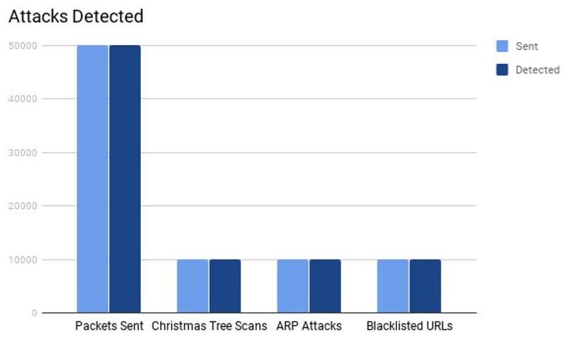

Multi-Threaded Packet Sniffer
DateNovember 2017 - December 2017
RoleSolo Project
TechnologiesC
DescriptionA Linux packet sniffer that is able to detect and analyse Ethernet, ARP, IP, TCP and HTTP packets. The system also detects ARP cache-poisoning attacks, Christmas Tree attacks and blacklisted URL requests. A thread pool of up to 8 threads allows for multiple packets to be analysed at once.

Features
- Detects Ethernet, ARP, IP, TCP, and HTTP packets
- Outputs information contained in the headers and body data
- Detects ARP cache-poisoning, Christmas tree attacks, and blacklisted URL requests
- Threadpool of up to 8 threads
Questions
This program was developed as part of the CS241 Operating Systems and Computer Networks course during my university degree. As part of the coursework for the module, I had to develop a C program that was able to detect incoming packets on a Linux system, analysing the packets headers (as well as HTTP data) to alert the user if certain attacks are occuring.
ARP cache-poisoning is where an attacker spoofs ARP packets to falsely associate a MAC address with an IP address of another device. This basic program detects all ARP packets and notes them as potential ARP cache-poisoning attacks.
A Christmas tree attack is the sending of Christmas tree packets (packets with many or all of the TCP flags set). Since different operating systems will comply with the Internet Protocol standard in different ways, sending these kind of packets will help an attacker determine the operating system of a system. Three flags that are not set under normal circumstances but are in a Christmas tree attack are FIN, URG, and PSH. So detecting these three flags as seet in the TCP header indicates a Christmas tree attack.
Within a HTTP packet several pieces of information is contained. One piece of information within requests is the Host URL, the URL being connected to. If this Host is a blacklisted URL (or a variation of one) then the packet can be detected and dealt with.
The program currently is able to parse Ethernet, ARP, IP, and TCP headers, as well as HTTP data. Packets which do not contain any of these headers will be detected by the program, but the information within them is not parsed. Parsing of the data can be added to the source code however due to the layered parsing method, assuming the structure of the data is known.